规则
- 四格：主页、搜索、AI、设置。当前一格 ink，其余 62% ink，不用颜色区分。AI 用对话气泡图标。
- 手机：胶囊不占满一行，按内容宽度居中（每格 60，共 248）；只有图标，不写文字，名字只给读屏。
- 手机：每一格都是切换页面，不是弹窗。页面铺满胶囊后面的屏幕，没有把手、关闭按钮和遮罩；胶囊一直在，镜片和页面同时换，页面 180ms 淡入。Esc 回主页。
- 桌面：图标在上、文字在下；搜索、AI、设置以面板打开，镜片与面板同时响应。
- 镜片：glass-press 底加上沿高光。换格用 ease-spring 300ms 滑过去，途中横向拉长 5%、纵向压扁 3%，到位回圆。减少动态效果时直接到位。
- 胶囊只管「去哪里」。收藏、备注与标签留在详情工具条，批量动作留在多选菜单。
- AI：内置助手还没有。页面只写「即将推出」和一句说明，不放输入框或可点的动作。
- 添加（记一笔）在设置第一组「添加」；键盘 N 和首次打开页的「记一笔」照旧直接打开。
镜片换格（手机，原尺寸 2 倍）
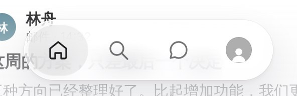
停在主页
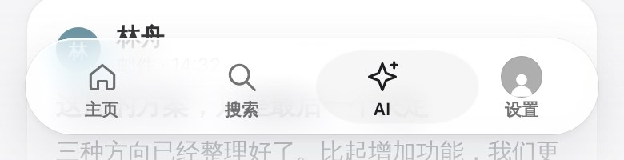
滑向 AI 的途中：拉长、压扁
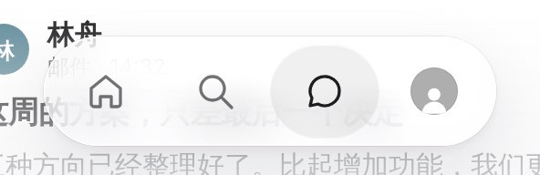
到位后回圆
手机 390 · 每一格是一个页面
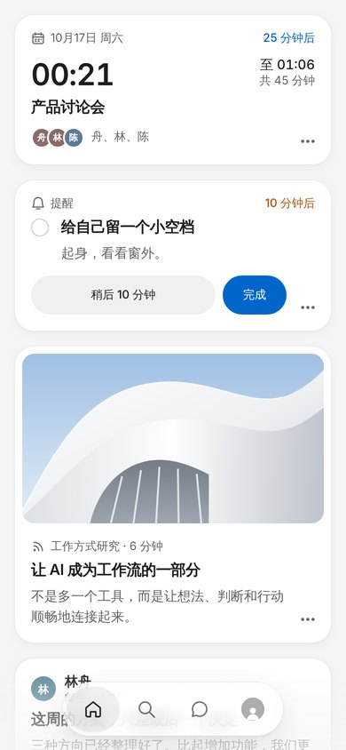
主页
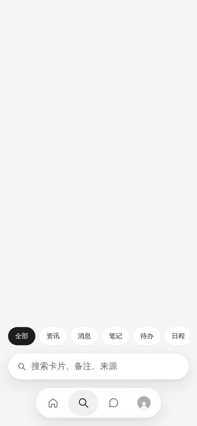
搜索页：筛选和输入框在胶囊上方
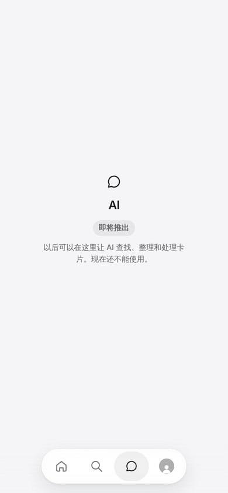
AI 页：只写即将推出
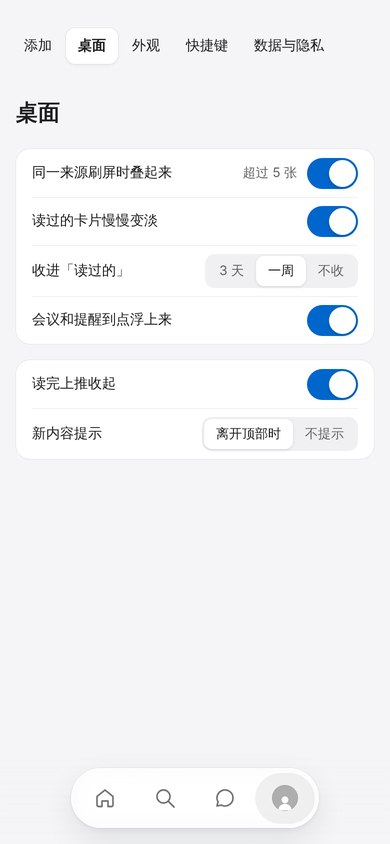
设置页
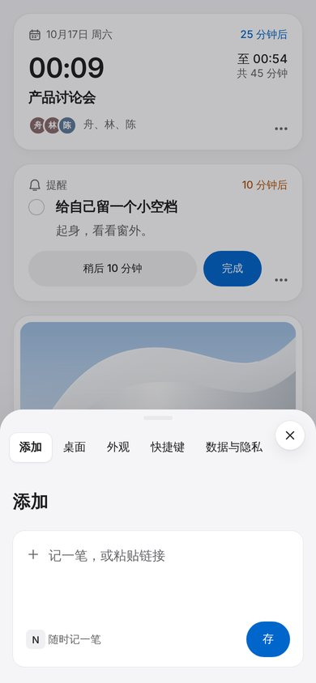
设置 › 添加
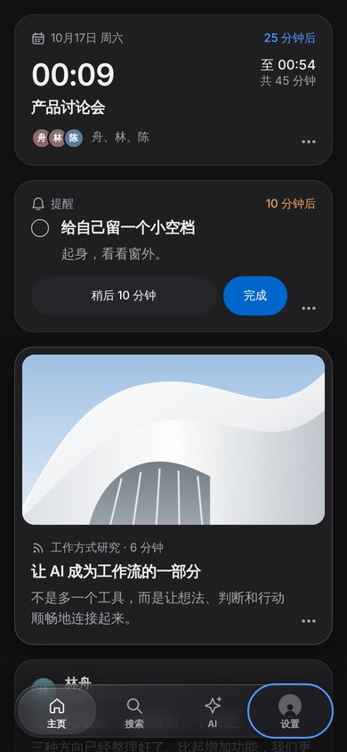
深色
桌面 1440 · 面板
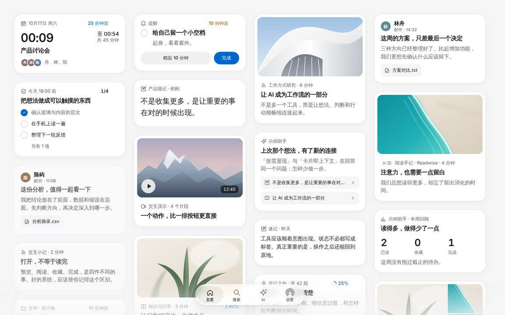
工作台：胶囊居中，图标加文字
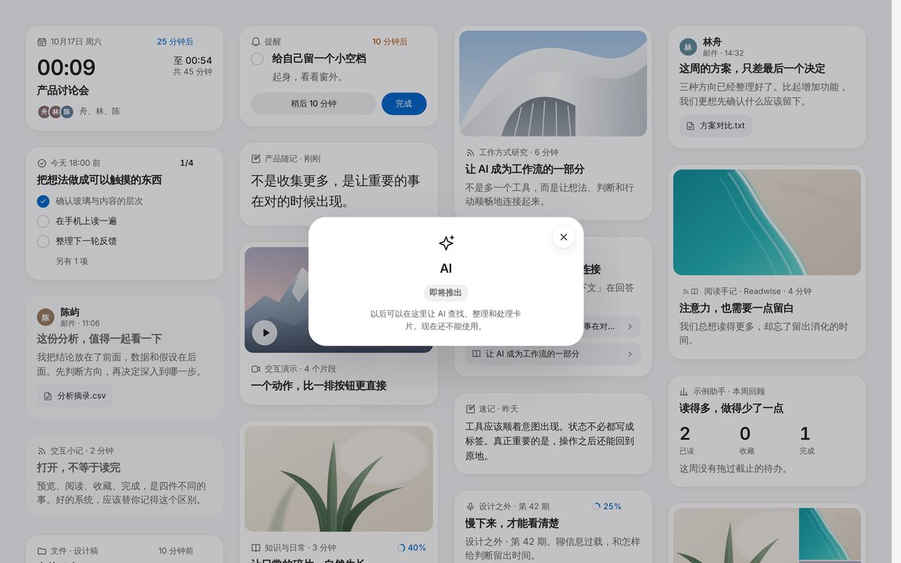
AI 面板
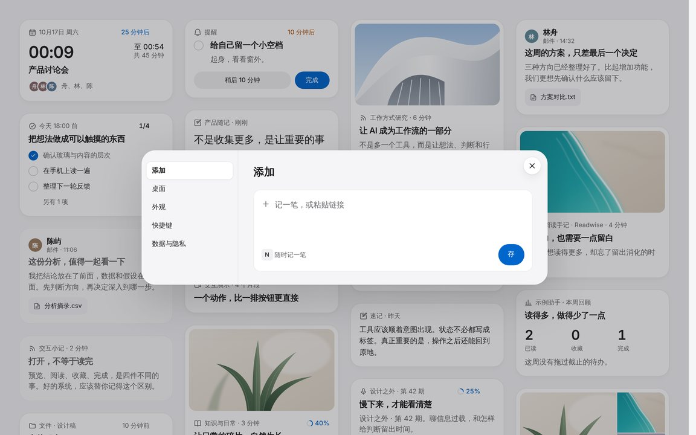
设置 › 添加
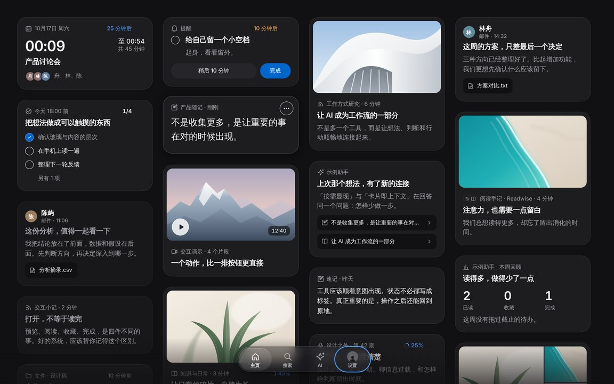
深色